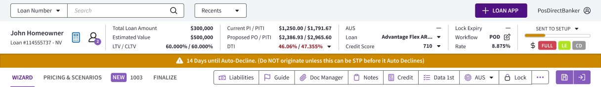

- Role
- Principal Product Designer
- Ownership
- Product strategy, IA, UX/UI, prototype
- Timeline
- 2026 · 1 month
The challenge
A genuine mobile experience, not a shrunken desktop.
The existing POS exposed a broad set of tools and information built around a desktop screen. The mobile concept reframes the product around what a loan officer needs in the moment: priorities, actions, and the next logical step in the loan journey.
Surface priorities
Bring time-sensitive tasks and high-value actions forward instead of exposing the entire pipeline at once.
Reduce redundancy
Remove duplicated information and collapse complexity so the experience fits a phone without feeling cramped.
Restructure around the journey
Organize tools and information in the chronological order of loan origination.
Before & after
From full pipeline visibility to actionable focus.

Key design decision
Reorganizing the loan around the origination journey.
Information and tools follow the sequence of the origination process. That cuts navigation overhead and surfaces blockers or incomplete tasks that could slow the loan. Services are built into each step, so everything needed appears in one linear flow.

Explore the prototype
Interactive Figma prototype · best viewed on desktop
Outcome
A validated direction, ready for user testing.
The concept established a mobile-first architecture that brings the core POS workflow to loan officers away from their desks. The next step was validating it with loan officers before production refinement.
Approved by business leadership and the POS product owners. Engineering is now preparing the backend to connect to the new mobile interface.
Next steps
A path toward
AI-powerd work.
While the concept went through user testing and refinement, I planned the next one to two years of product evolution. The architecture supports a gradual shift from traditional UI patterns to AI-assisted workflows, so individual sections can become conversational and automated as AI becomes reliable enough for production.
See the same approach in the borrower application →Reframing the mortgage application as a conversation